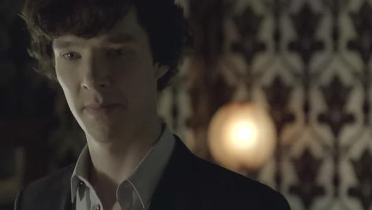

角色简介
主角： 夏洛克·福尔摩斯（Sherlock·Holmes）

本作第一主角，自称职业为“咨询侦探”，与华生医生合租贝克街221B公寓。平时待在公寓里等待警方的咨询或者关注报纸和网上的新闻案件，穿着随意，破案时行头通常为黑色西装，外面罩一件黑色长毛呢风衣，围深蓝色围巾。
头脑反应迅速，洞察每个细节，知识丰富，在第一次见到华生时就看出了他的身世，令其大为惊讶。每当面对复杂悬疑的案件时就异常兴奋，视破案为实现人生价值的手段，破案时不许其他人干扰或者否定，靠贴尼古丁贴片保持思维兴奋。除了破案之外，几乎对任何事情都不感兴趣，一旦没有案子可破，就会焦躁不安。
擅长推理、小提琴和格斗术，使用演绎法来推断案情，个人网站名为“演绎法研究”，经常在上面发表一些断案的心得。
性格坚强、自信、孤傲、厌恶权势，平时与人交往就像个孩子，跟现实各种格格不入，曾经只裹着一条床单就去了白金汉宫，破案时的我行我素更是得罪了不知多少警官。不过实际上还是相当关心周围的人，比起原作中的福尔摩斯，展现出了更多人的温情。视华生为“唯一的朋友”，另外也很重视女房东赫德森太太、雷斯垂德警官和女法医茉莉·琥珀。与哥哥麦克罗夫特关系比较冷淡，跟莫里亚蒂是劲敌，欣赏的异性是艾琳·艾德勒。
被莎莉·多诺万警官称作“怪胎”，她对夏洛克的能力抱有怀疑和不安，认为他早晚会从破案转移到犯案去证明自己的天才。这里的夏洛克就如同不谙世事却被世俗嫉恨的天才一样，后来被莫里亚蒂陷害时，世俗屈从了咨询罪犯，也差点扼杀了这个天才。
因莫里亚蒂设下的圈套，夏洛克为保护华生和其他重视的人的生命，在华生面前坠楼，不过奇迹般的假死脱身，目前行踪不明，尚未正式现身。
夏洛克·福尔摩斯
约翰·H·华生（John·H·Watson）
本作另一位主角，退伍军医，曾服役于前诺桑伯兰第五明火军团，夏洛克·福尔摩斯的室友、挚友和助手，与其合租贝克街221B公寓。 左肩在战斗时中弹，留下了心理障碍以致跛足，但在“粉色的研究“一集中和Sherlock追踪凶手，穿越伦敦市区的过程中克服了心理上的伤残障碍而痊愈。有一个嗜酒的姐姐叫Harry（华生的手机就是她送的，但姐弟关系并不好），在“盲眼银行家”案中对女医生Sarah表现出有好感。 性格稳重、温和，对人友善，协助破案时则果敢坚强。通常都是帮夏洛克跑腿调查或者一起抓犯人，枪法很准，曾经在夏洛克命悬一线时隔着两道窗户玻璃一枪打中凶手要害。 非常欣赏、信任夏洛克，虽然对夏洛克的行事风格有所抱怨，却仍然愿意帮助他，每次夏洛克调查惹出麻烦，华生也总是帮他解释。麦克罗夫特曾想买通华生监视夏洛克，遭到拒绝。 由于华生将他们办的很多案子都写成了博客发表，夏洛克名声大噪。S02E03中夏洛克被诬陷成了骗子，华生顶着巨大压力选择相信他，即使夏洛克在走投无路之际为了保护他亲口说自己骗了他时，华生依然坚信自己的看法，令孤傲的夏洛克感动的流下了眼泪。 因亲眼目睹夏洛克坠楼身亡的惨状，华生大受打击，甚至不得不去看心理医生，目前暂时离开了贝克街，在夏洛克的墓碑前称其为“我见过的最好的人，最富有人情味的人”。雷斯垂德警官（Lestrade）
教名格雷格，伦敦警局的警官，莎莉和安德森的上司。 经常请夏洛克帮忙，算是夏洛克在警察中比较认同和相信的一个，每当需要警方的力量时，夏洛克总是第一个想到雷斯垂德。 S02E03中，在部下和伦敦警长格莱森的巨大压力下违心的追捕夏洛克，但心里还是有所疑惑，后来被夏洛克和约翰逃脱。 麦克罗夫特·福尔摩斯/麦考夫·福尔摩斯（Mycroft·Holmes） 夏洛克的亲哥哥，英国政府的高级官员。他这个身份有时被夏洛克用来当做调查的通行证。 跟夏洛克关系比较冷淡，但事实上还是相当关心这个聪明却叛逆的弟弟，一开始想通过收买华生来监视夏洛克但被拒绝，便在夏洛克和华生身边秘密安插保护人员。在无意向莫里亚蒂泄露了夏洛克的信息后，麦克罗夫特请求华生一定要保护好他。但在夏洛克做出一些出格的事时，麦克罗夫特还是有一种“恨铁不成钢”的心情的。 S02E03中，因自己的疏忽间接导致了夏洛克的“死”，十分后悔。吉姆·莫里亚蒂（Jim·Moriarty）
第一季和第二季的最终反派，自称是个“咨询罪犯”。 聪明狡猾，行事低调谨慎，手下不计其数。视夏洛克·福尔摩斯为劲敌，所有的案子或多或少都与他有所关联。他制造出一连串案件，甚至拿华生和夏洛克身边的人相威胁，只为彻底打败他，抹杀掉夏洛克·福尔摩斯的存在。 第二季最后与夏洛克在屋顶对决，为逼其自杀，饮弹自尽。赫德森太太（Mrs.Hudson）
贝克街221B的房东，有时也照顾夏洛克和约翰的生活。跟约翰一样，虽然对夏洛克抱怨不止，但跟他的感情还是蛮深的。夏洛克曾经因为有个犯人伤害了她而愤怒地把那犯人扔出了窗户，她则在夏洛克的墓碑前像母亲数落孩子一样流着眼泪数落他以前住在公寓的种种“罪行”，把他当做自己的孩子一样看待。茉莉·琥珀（Molly·Hooper）
法医，跟夏洛克关系比较好的人之一，对夏洛克抱有好感，在圣诞节时为他精心准备了一份礼物，夏洛克在被莫里亚蒂逼入绝境时曾请求她的帮助。艾琳·艾德勒（Irene· Adler）
艾琳·艾德勒是福尔摩斯一生中最敬佩的女性，很多以福尔摩斯为题材的作品都将两人所谓的“爱情”当做噱头，如名侦探柯南剧场版《贝克街的亡灵》，但官方说法是，福尔摩斯并没有爱过她，只是把她当作一位可敬的对手。